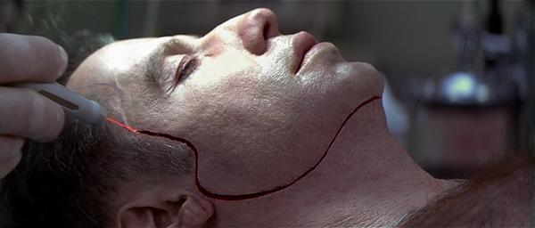
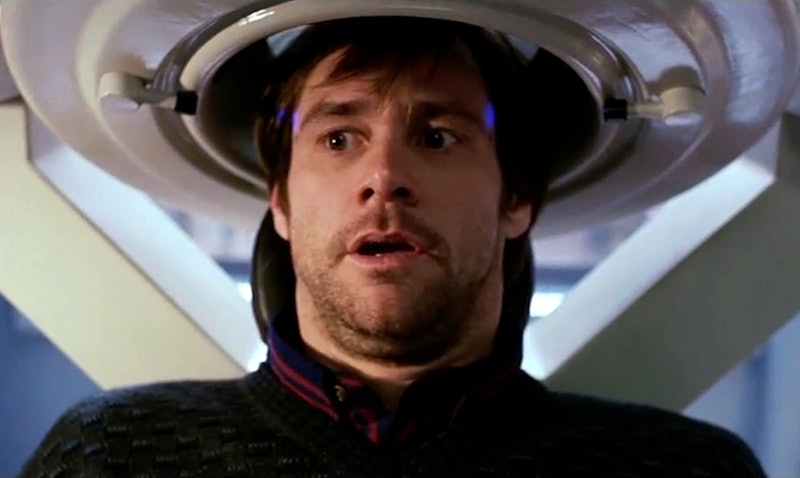
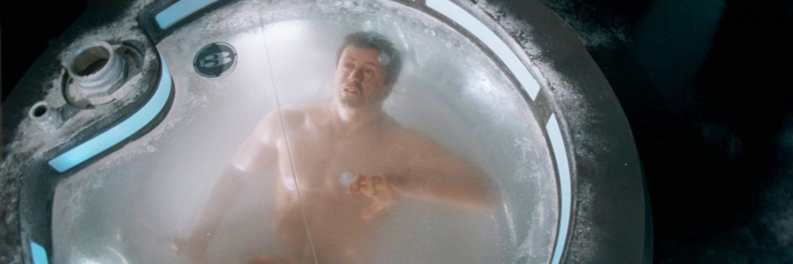
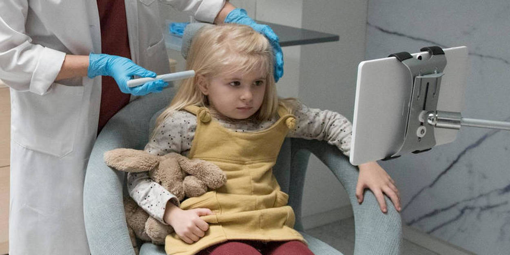
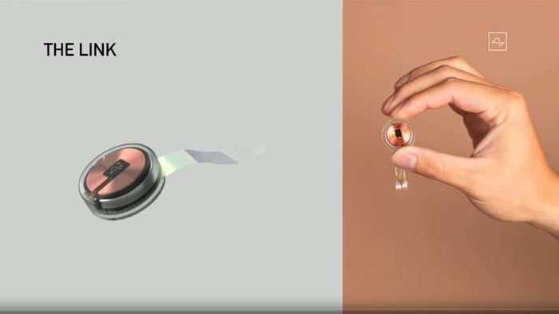

>Volt-face
Film un peu ridicule, mais bien diversifiant de 1997, volt face avait mis l'idée de transplantation faciale pour aider le personnage de John Travolta a infiltré une organisation criminelle, le concept relevé bien sur de la science-fiction dans les années 90.

Ce n'est qu'en 2005 que la prophétie est devenu réalité avec la première transplantation faciale d'une patiente nommé isabelle dinoir, qui est malheureusement décédé en 2016 suite à une longue maladie, depuis environ 30 personnes ont reçus l'opération incroyable à travers le monde.
Eternal sunshine of the spotless mind
Film de 2004 de Michel Gandri, Eternal sunshine of the spotless mind raconte l'histoire d'un couple qui décide d'effacer leur partenaire de chacune de leur mémoire, nous sommes évidemment dans le domaine de la science-fiction, mais des chercheurs au american technological association ont annoncé en 2015 qu'ils étaient capables de contrôler certaines mémoires chez les souris.

ils sont maintenant en train d'explorer le processus chez les humains atteints du trouble stress post-traumatique pour faire disparaître leur mémoire négative et leur faire vivre des vies normal. Reste à voir si les essais vont fonctionner chez les humains, mais il s'agit quand même de quelque chose d'incroyable chez les souris.
Demolition Man
John Spartan accusé d'homicide par imprudence, suite à une opération policière, est condamné à une longue peine d'hibernation et de rééducation au Cryo-Pénitencier de Californie : il y est cryogénisé et devra subir pendant 70 ans une sorte de lavage de cerveau, au terme duquel il devrait être un citoyen qui ne représente plus aucun danger pour les autres, avant d'être sorti de son état d'hibernation.

Black mirroir
Dans "The Entire History of You", diffusée en 2011, le scénariste Jesse Armstrong imaginait un monde où chacun enregistrait les moindres moments de sa vie via un implant placé derrière l'oreille. Il était alors possible de rewatcher votre vie, des instants les plus heureux aux plus déchirants. Pour raconter son histoire, l'auteur prenait alors le point de vue d'un homme, Liam, dont le couple était en pleine déliquescence. L'application de cette révolution technologique aux relations amoureuses se révélait aussi glaçante qu'édifiante, et montrait comment pourraient évoluer les rapports entre les gens dans quelques années

Le 28 août 2020, Neuralink, la start-up d’Elon Musk a implanté une puce connectée dans le cerveau d’un cochon, un prototype qui pourrait, pour les humains, redonner la parole et la mobilité aux personnes paralysées.
